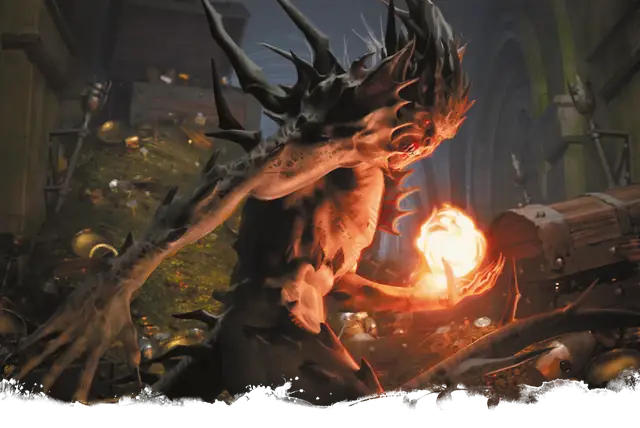

Шипастый дьявол (гаматула)
Barbed Devil
Среднее Исчадие (Дьявол), Принципиальное Злое

Класс Защиты 15 Инициатива +3 (13)
Хиты 110 (13к8 + 52)
Скорость 30 футов, Лазания 30 футов
| мод | спас | ||
|---|---|---|---|
| СИЛ | 16 | +3 | +6 |
| ЛОВ | 17 | +3 | +3 |
| ТЕЛ | 18 | +4 | +7 |
| мод | спас | ||
|---|---|---|---|
| ИНТ | 12 | +1 | +1 |
| МДР | 14 | +2 | +5 |
| ХАР | 14 | +2 | +5 |
Сопротивление урону Холод
Иммунитеты Огонь, Яд; Отравленный
Чувства Тёмное зрение 120 футов (игнорирует магическую Темноту), пассивное Восприятие 18
Языки Инфернальный, Телепатия 120 фт.
Опасность 5 (1 800 опыта; БВ +3)
Особенности
Шипастая шкура. В начале каждого своего хода дьявол наносит 5 (1к10) Колющего урона любому Схваченному им или удерживающему его в захвате существу.
Восстановление дьявола. Когда дьявол умирает за пределами Девяти Преисподних, его тело превращается в сернистое облако и в тот же миг заново возрождается со всеми Хитами где-то в Девяти Преисподних.
Сопротивление магии. Дьявол совершает с Преимуществом спасброски от заклинаний и прочих магических эффектов.
Действия
Мультиатака. Дьявол совершает либо одну атаку Когтями и одну атаку Хвостом, либо две атаки Броском пламени.
Когти. Бросок рукопашной атаки: +6, досягаемость 5 фт. Попадание: 10 (2к6 + 3) Колющего урона. Если цель — существо Большого размера или меньше, она становится Схваченной (Сл освобождения от захвата 13) обеими руками.
Хвост. Бросок рукопашной атаки: +6, досягаемость 10 фт. Попадание: 14 (2к10 + 3) Рубящего урона.
Бросок пламени. Бросок дальнобойной атаки: +5, дистанция 150 фт. Попадание: 17 (5к6) урона Огнём. Если цель — воспламеняемый объект, который никто не носит и не несёт, она начинает гореть.
Бонус мастерства +3
Среда обитания Девять преисподних
Сокровища Любые
Шипастый дьявол
Дьявол алчности и одержимости
Инфернальные собиратели, шипастые дьяволы с фанатичным рвением охраняют свои сокровищницы и рыщут по всем планам бытия в поисках пополнения для своих коллекций. В иерархии Девяти Преисподних их также называют гаматулами. Эти дьяволы украшают свои усеянные шипами тела самыми ценными трофеями и вещами, отнятыми у тех, кто пытался — но не сумел — их обокрасть. В бою шипастые дьяволы наносят удары колючими конечностями и мечут адское пламя.
Часто шипастые дьяволы служат стражами и счетоводами при ледяных дьяволах-генералах, военачальниках-исчадиях преисподней, архидьяволах и прочих могущественных злодеях. Взамен они получают защиту для собственных коллекций. Многие шипастые дьяволы также держат при себе целые сети бесов, которые прочёсывают планы в поисках ценных диковин или полезных и алчных смертных.
Шипастые дьяволы редко собирают что-то приземлённое вроде монет и самоцветов. Куда чаще они гордятся тем, что владеют величайшей во всей мультивселенной коллекцией предметов одного определённого рода, например уникальных редкостей или символов власти. Шипастые дьяволы не крадут то, что им приглянулось; вместо этого они заключают сделки, заполучая разом и сокровище, и смертную душу.